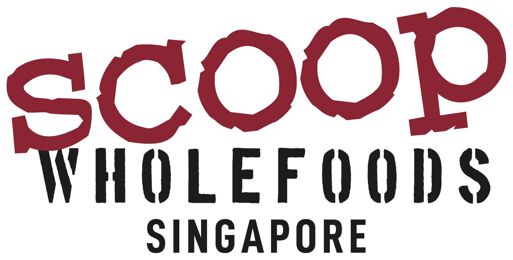
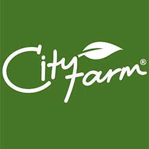
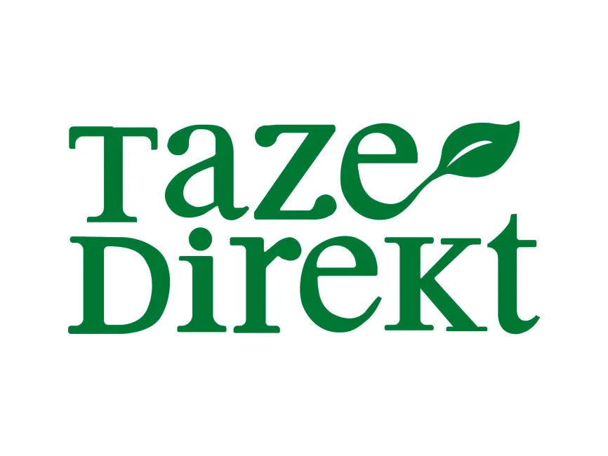
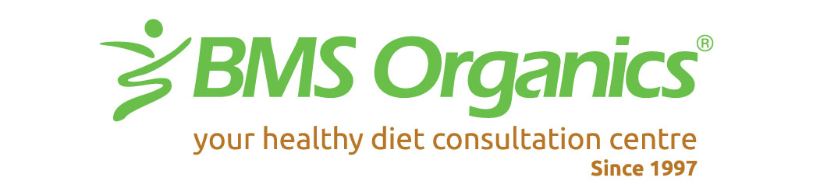
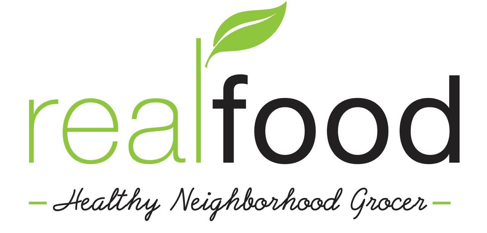
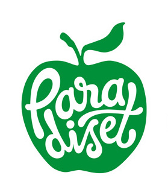

Users haven't given up on eating well — they just need it to be as easy as ordering pizza.
The problem with "healthy eating" right now
We benchmarked our grocery assortment against local competitors across 5 markets — scoring each platform on the breadth, visibility, and quality of healthy options available to users. Here's what we found.
Our benchmark scores each platform on the breadth and quality of healthy grocery options available. foodpanda scores 36% in Singapore vs. FairPrice's 63% — a 27-point gap in our most health-conscious market.
32% of users who shop elsewhere specifically cite missing gluten-free, sugar-free, and dietary items as the reason — an assortment gap, not a delivery gap.
Up to 49% of users say "not being able to see or feel produce" is the #1 barrier to buying fresh groceries through a delivery app — a trust and transparency gap we can close.
An honest word from us
The problem was us — the way we sorted, the way we surfaced, the way we built categories that made "Pantry" a destination but "High Protein" an afterthought.
The brands doing the real work — small producers, nutrition-forward suppliers — are invisible. This is what it could look like if we change that.
What would change
Three things are wrong. Three things we're proposing to fix.
This wouldn't just be a campaign. It would be a rebuild.
How we'd do it
Curated
We would hand-pick every vendor and category in this experience. No algorithm decides what users see. If it's in this section, someone on our team chose it. Curation means accountability.
Intentional
"Pantry" is a room. "High Protein" is a goal. We'd reorganise around the second one. Whether a user is managing blood sugar, training, or just eating less processed food — there would be a path built for them.
Educational
Nutrition labels, ingredient callouts, vendor stories — on the product, not buried in a PDF. We're not here to coach you. We're here to make sure you have what you need to decide for yourself.
The brands making it real
We haven't built this yet — but we know exactly who would make it real. These are the producers already doing the work. We'd build the experience around them.
Our largest healthy variety benchmark gap. Priority market for our proposed rollout.
Premium produce and clean-label pantry goods, sourced with full supply-chain transparency. Singapore's most trusted organic grocer.

Bulk whole foods and zero-waste staples for the intentional pantry. Singapore's leading bulk/wholefood destination.
Grass-fed, pasture-raised, and wild-caught proteins with full traceability. Ethical meats and vegetables, direct from trusted farms.
No competitor owns healthy groceries in Turkey. We intend to change that.

Pioneer in certified organic retail. Fresh vegetables grown within 80km of Istanbul, harvested to order for true farm-to-door freshness.

Top premium organic e-commerce with seasonal sourcing and no cold-chain shortcuts. Farm-to-door freshness, delivered express.
Malaysia's health-conscious shoppers are growing. We're building the infrastructure to serve them.

Malaysia's largest offline organic retail chain. The brand health-conscious Malaysian households have trusted for over 20 years.
~35% share of Malaysia's online healthy snacking market. Health snacks and superfoods built for the everyday Malaysian household.
Leader in farm-to-table subscription boxes. Certified organic produce delivered directly from their own farms — a loyal base of health-driven subscribers.
A health-conscious, digitally-engaged market with strong demand for clean-label and organic options.
Dominant leader in the Philippine health niche with ~60% of the market. The country's most trusted source for organic, natural, and specialty health products.

Top curated organic and local boutique in the Philippines. Carefully sourced produce and pantry items, with a loyal following among health-conscious Filipinos.
Swedes set the bar for healthy grocery expectations. We propose to meet it.
Sweden's dominant online supplement and health product retailer. The go-to destination for vitamins, supplements, and wellness products with ~40% market share.
Sweden's leading online-only grocer with ~20% of the total grocery market. The brand Swedes trust most for quality online grocery.

Stockholm's original organic supermarket. A curated range trusted for over 30 years — high-end boutique organic with a loyal in-store following.
A new way to browse
We'd rebuild the browse experience around what users are actually trying to do — not how our warehouse is organised.
Meat, dairy, legumes, and supplements for training, recovery, and satiety.
Fermented foods, fibre-rich staples, and probiotic-friendly picks your gut will notice.
Flavour-forward options under 300 calories — without the sad salad energy.
Snacks, sauces, and drinks with clean ingredient lists — checked, so you don't have to.
Calcium-rich, vitamin D-forward foods worth adding at any age.
Nutritious options the whole table will actually eat — adults, toddlers, fussy eaters included.
These categories would be curated manually. Items would earn their place by ingredient, not by ad spend.
The opportunity
No meal plan. No subscription. No guilt. Just better options — ready for when we build this.